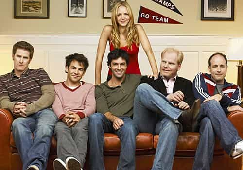
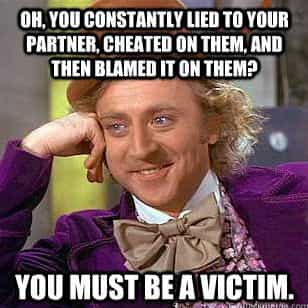

is an aspiring philosopher king, living the dream, travelling the world, hoarding FRNs and ignoring Americunts. He is a European at heart, lover of Latinas, and currently residing in the USA.


First, let me say that this film is no masterpiece; it is an enjoyable Hollywood film made in the Current Year, of which there are very few, and it displays male and female behavior honestly, which is astounding, and is well acted. Of course, being a mainstream Hollywood film, it has its flaws. But I found a rather compelling story here in how it represented the typical American woman that we all have to deal with.
Michael Shannon plays Frank, a middle aged chef in France who is in a new relationship with the young and impulsive Lola. Amongst a fury of red flags, we see a relationship start, falter, and crumble. But Frank’s bad judgment expands what should be a 20 minute film version of a ROK game article into a full length film.
Lola, well acted by the ridiculously named Imogen Poots (who appears topless), is your typical early 20s girl, and has the baggage one would expect of a single, attractive American student able to afford transatlantic travel with no apparent source of income.
Frank is the most interesting character. The film begins on a first date, as Frank makes a remark about how quickly he was able to bed Lola, and seems a bit disappointed that he’ll have to put this new girl in the bang-and-release category.
In this common purple pill scenario, Frank says, “Hey, maybe we should wait,” to which Lola laughs and asks “Wait for what?” “Until the next time we see each other,” replies Frank. Lola honestly can’t imagine a reason to delay gratification, and finds the question itself laughable. She’s never stopped herself from having sex with guys she’s just met before, and it would be absurd to start now.
Frank is at the point in life where many men are seriously considering marriage. “I’m not playing games,” Frank says, in bed with the topless Lola. Whether Frank has some naïve image of Lola as a sweet, innocent, honest girl, or he’s simply tired of endless one night stands that don’t go anywhere, he’s clearly a bit frustrated with Lola’s childish response “Well, sometimes, games can be fun.”
Cuts like a knife, but it feels so right, na na na, na na na na na
For a moment, it appears the mood is spoiled, and Frank may lose out completely, as Lola’s emotions change like the wind and she agrees they should just wait, and that’s a great idea. Until a few moments later when her mood changes again, as she likely thinks about the last rough sex she had with a stranger, and she adds, “Or maybe you could hold me down while you do it.”
Rough sex with a girl you just met is a sign of poor judgment and a long sexual history. The first time I pushed things with a girl I met just a couple of hours earlier, I was shocked at what I could get away with. Choking, slapping, calling you daddy, spanking, no-limits dirty talk, all of this is not only possible, but fairly common on first date bangs these days. This should have been a signal that the girl had an expiration date of lunchtime tomorrow, yet just 10 minutes into the film we are at red flag #2.
Frank meets Lola’s mom, who wears a low-cut top revealing most of her breasts, as she orders tequila shots for the table. The shameless mom openly flirts with Frank in front of Lola, asking him when he started cooking. “Young? How young. 16? Mmmm that’s quite an image.” Of course, we’ll ignore the fact that any late 50s man who made a remark about a teenage girl his son was dating would be seen as “creepy” and “rapey”, and just point out that this is a huge red flag, and Frank should have cut things off immediately after this meeting. There’s no mention of any father, of course, and every indication that Lola is following in the footsteps of her mother.
Your boyfriend’s a scrow!
Lola graduates college. One night after work, Frank walks over to a bar to meet her for a drink. He finds her drinking with a rich, sleazy smooth talker (Dr. Lexus from Idiocracy) who offers her a job. Women, despite their vaunted high emotional intelligence, never seem to pick up on the absurdity of a stranger wanting to offer a college graduate with no real world skills a job opportunity, without any ulterior motives. Frank immediately calls her on it, but again, the relationship is not ended. If your girl is flirting and drinking with another guy, and they exchange contact info, that is game over.

Frank comes home to hear Lola excitedly asking someone out for drinks on the phone. It turns out this is for her new job that the douchebag offered her. One thing that makes the film so engaging is the attention to detail. Realistic tiny lies and manipulations are built in to every scene. There are the all-too-common little word games that women will play like when Lola claims, “Oh, no I’m not working for that douchebag, it’s for this woman.” When pressed further she finally admits he owns the company, which she would have never volunteered because, hey, “He doesn’t work there!”

When one of the kitchen staff immediately recognizes her as “Lolita” and gives her a kiss on the cheek, Frank just blows it off, but she’s clearly banged the dishwasher. There’s also a point where another man calls Frank from Lola’s phone. When other men have nicknames and unexplained histories with your girl, she should no longer be your girl.

One night Lola shows up late in tears, and she’s really sorry, but she made a mistake and totally didn’t mean to fuck this other guy but stuff happened and feelings! This is a powerful scene for Frank. He’s a complex character because he’s obviously showing terrible judgment in keeping this girl around, but here he manages to have strong frame, keeps calm, speaks slowly and deliberately, and even cooly states “Oh yeah, that hotel? I used to pick up cougars there who really taught me how to fuck, so I like that place.”
He tells her he has fucked a lot of beautiful women, and mature ones that aren’t afraid their mommy is going to steal him away from them. He cooly calls her out as the kind of weak slut that can’t be without a man for more than 24 hours, then he walks out the fucking door and I’m ready to applaud and go home, but we are only 25 minutes into the movie, and Frank just can’t let it go.
I’m so sorry you cheated on me baby, I know you didn’t mean it!
Frank comes back because he wants to know the truth, have closure, know what really happened, and all those other pointless answers that blue pill men need. The script, while not boring, is rather rote, and in this respect very honest in terms of the modern woman and her nature. I wasn’t surprised at all when Lola comes out with the sob story that she was raped by her mom’s boyfriend, and that’s what drove her to have sex with a stranger and cheat on Frank.
Of course, she’s “never told anyone this,” not even her mom. I’ve had several women that I hadn’t known long tell me rape stories that supposedly no one knows about but for some reason she’s telling Max all about it after two beers.
Frank believes every word of the story, without evidence, and develops one-itis for this girl who has little to offer other than a nice body. The story gets a bit extreme at times, but the true value in this film is its honest portrayal of female dynamics, and the uncomfortable, painful, but honest portrayal of the beta male.
Michael Shannon has an ability to convey considerable emotion from small eye movements and body language. There were several scenes where you could observe him react to the bullshit he was hearing from Lola, his eyes narrowing a mere millimeter as he reacts to the lies and explanations and stories he’s hearing, but yet his heart somehow gets the best of him and tells him to hang in there and protect this woman. Of course, that is the nature of man, to protect and provide for women, but it is nevertheless painful to watch Lola manipulate him.
I wish I had seen this film in the theater, as I found myself laughing out loud at what the general movie-going audience would consider very inappropriate points such as…
I didn’t have any intention of fucking him. I think I just kind of shut down and it happened.
The final shot includes one last manipulation by Lola. There’s nothing groundbreaking here, but it’s definitely the type of film that can help wake up brainwashed men struggling to maintain unhealthy relationships with damaged women, and it’s a breath of fresh air to see a woman portrayed realistically and not slaying dragons and kicking ass while earning 4 PhDs online and running a Fortune 500 startup and publishing a book on French poetry.
The moral of this story is two-fold. First, women are like Lola, and second, don’t be like Frank.
Read More: Portrait Of A Modern Career Woman